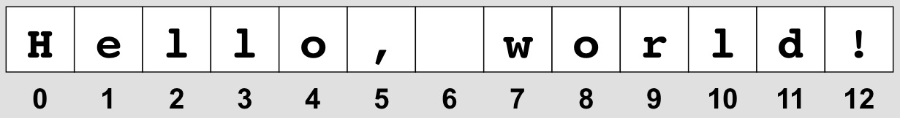

Introduction to Computer Science:
Control Structures and Data Types
Welcome to Unit 2!
- Unit 2, Day 1 - Branching Structures
- Unit 2, Day 2 - Programming Project 1 - CoinFlipper
- Unit 2, Day 3 - Indefinite Loops
- Unit 2, Day 4 - Programming Project 2 - Craps
- Unit 2, Day 5 - String Data Type
- Unit 2, Day 6 - Program Design Exercise
- Unit 2, Day 7 - Lists
- Unit 2, Day 8 - Using a Simple List
- Unit 2, Day 9 - Sorting, Searching
1. Branching Structures
A "branching structure" is an element in a program that allows a decision to be made, depending on some condition. In Python, the branching structure is the if statement.
1.a. The if statement
The Boolean condition has a value that is True or False. If the condition is True, the 3 statements in the indented suite will be executed, and then the statement following that suite will be executed. If the condition is False, the 3 statements are skipped, and only the statement following the suite is executed. (Note that the suite has been indented 4 spaces, the standard in Python.)
Take a look at each of these examples and predict what you think the output will be. Then write each program and see if you were correct:
Did the very last example behave the way you expected it to? Probably not...
1.b. Types of Errors
Writing programs is really hard work. Depending on the type of program, you may find that the time you have to allot to working on it looks something like this:
| Planning your program | 20% of total time |
| Writing/entering code | 10% of total time |
| Debugging code to eliminate errors | 70% of total time |
The types of errors, or "bugs", that you'll have to deal with fall into three categories:
Syntax errors are the equivalent of spelling or grammar mistakes: you have mistyped something, or constructed a program statement in such a way that Python doesn't understand what you're trying to do.
In the case of most syntax errors, your program won't even run, and Python will try to give you an error message that may help you figure out what you did wrong.
Runtime errors are problems with your program that crop up when the program is running: you ask the user to enter two numbers to be added together, for example, and they type in the words "two" and "three". Writing robust programs that help to prevent this kind of problem is an important part of programming.
Logical errors have to do with unexpected behavior of the program. In the example here:
... the program is syntactically correct, and it runs fine—it just didn't do what we'd expected it to do: It's output is:
The logical flow of the program doesn't match what we were anticipating.
So... how would we write that program to identify whether or not the value of letter is "A"?
1.c. Additional if statements
There are additional forms of the if statement that often come in handy:
Note that the if and else suites are indented 4 spaces, which helps us visualize that they are the two different options in this part of the program.
Write a program that asks the user to enter a number. If the number is greater than 0, the program prints out a "Hello" message that many times. If the number is not greater than 0, the program should print out a brief error message telling them what they did wrong.
Some problems require that there be more than a single option considered. For these cases, you basically have two options:
- Organize your logical solution so that a series of if-else statements can be nested, allowing the program's logic to drill down to find the appropriate action, or
- if the actions can all be considered simultaneously, use an if-elif-else statement.
Usually one strategy will recommend itself over the other. The next two examples, though, show how each of the strategies can be used to solve the problem of calculating the roots of a quadratic equation.
Example of using a nested if-else statement to solve a quadratic equation:
Example of using an if-elif-else statement to solve a quadratic equation:
Let's try a simple exercise to put some of these pieces together:
Write a program that asks the user to enter a name. If it's your name, the program should print a brief greeting to you and then say "goodbye." If it's anybody else's name the program should say ""Get out of here, <name>!" and then say goodbye.
Recall the syntax for having a user enter a string:
2. Programming Project 1 - CoinFlipper
For our first larger project, we're going to need a little outside help in writing the program. We're also going to introduce the format for the larger projects, which should give you the support you need to complete these assignments as required. This project is not actually much larger than the programs that we've been writing, so that makes it ideal for helping to ramp up your code-writing abilities.
2.a. Modules
A module in Python is a program that someone has written that can be used in a larger program. Collections of modules that can be used by programmers are called libraries.
One of the tremendous powers of Python is this ability to leverage the work that other people have already done, and the way one does that in Python is by importing modules.
To import a module that someone has already written so that you can use it in your own program, simply include the statement import <modulename> at the beginning of your program, just after your opening comments.
One important module is the math module, which includes lots of methods for handling more sophisticated math functions.
Start the Python interpreter, try out the following statements:
If you were to type "pi" into a regular program, Python wouldn't know what to do with it. But the module math has some methods built into it that you can use, once you've imported that module.
Similarly, how would you go about calculating the square root of 11? There are actually two ways of doing this:
The operation ** indicates an exponent, raising some value to the power indicated.
What do you think this code might print?
2.b. Help with Modules
If you need some quick help with a module or a method while in interactive mode, use the help command:
Most help files are more than a single screen in size, so you can use the f and b keys to page forward and backward through the help document. You can also search forward and backward through the document:
If the first occurrence of the search term isn't the one you want, hit the n key for next.
When you're done with the help file, type q for quit.
2.c. CoinFlipper.py
Take a moment to get the CoinFlipper assignment. As much as you might consider it convenient to just work off an electronic copy on the computer, go ahead and print it on paper. It's almost always a good idea to be able to draw on the paper copy, highlight certain key ideas or components, maybe even sketch a quick flowchart or pseudocode of your solution to the program. These are things that are done more quickly and easily with a pen/pencil on paper, rather than on a keyboard. Save the keyboard for actual coding.
Got the printout? Good. Take a look at the assignment and get started.
2.d. Code Review
You can quickly improve both your coding and your debugging skills by examining programs that other people have written.
Be sure you take a few moments to go over other people's programs, see what techniques they've used that you hadn't though of, or see how their programs might be improved.
You'll quickly come to realize how important good comments are in a program, as well as using "self-commenting" variables that help one to understand how a program works.
3. Indefinite Loops
Let's talk a little more about the while loop, and some of the different ways that it can be used in a program.
3.a. Review of for loops
The for loop is a loop that repeats a specified number of times:
3.b. The while loop
The while loop is typically used when you have a loop that needs to repeat some number of times, based on a condition. "While we haven't finished adding up this list of numbers, keep adding," for example.
Take a look at the following examples of while-loop programs, and identify the advantages and disadvantages of each.
3.b.i. Interactive loops
The interactive loop allows the user to approve a repeated process.
This loop works pretty well, but one of the problems is that it's annoying for a user to have to approve every iteration.
3.b.ii. Sentinel loops
One way of solving the problem of having to have a user repeatedly indicate that he/she wants to continue is by using a sentinel value. This value, when entered with the other numbers, will indicate to the loop that it should stop running.
This loop works much more nicely... but it introduces a new problem: What if one of the numbers that I want to find an average of is negative?
Here's a new trick: have the user enter each number as a string:
This is the best version of this program yet.
3.b.iii. Using while loops to validate input
Your program will be more robust, and less fragile, if it attempts to validate input, making sure that the data coming in to the program is appropriate.
Not validating input makes your program easier to break, and in security applications, can be downright dangerous to your program, your user's data, and your computer.
Here are two quick examples of how you can use a while loop to validate a user's input after he/she has entered it.
This next version of the program uses a loop that would repeat infinitely, except for the fact that—once we get the positive number that we're looking for—we use the break statement to break out of the loop.
4. Programming Project 2 - Craps
We are just about at a point where our projects are too big to fit into a single "program," and that's going to require a slight modification to our thinking about our programs. Before we jump into that, though, let's make a program that will allow the user to play craps on the computer.
4.a. More nano commands
For smaller programs, you're probably just fine using the arrow keys to move around in nano. Now that our programs are starting to get a little bigger, you should practice using some of the more advanced nano commands that will improve your efficiency in moving around the window.
More nano commands
- ^a - "Control-a" takes you to the beginning of a line.
- ^e - "Control-e" takes you to the end of a line.
- ^w - "Control-w" finds where a specified text occurs.
- ^\ - "Control-backslash" begins a Search-and-Replace process. Enter the text you want to search for and hit [Enter], then enter the text you want to use to replace the text you searched for and hit [Enter]. You'll then be given the option to replace individual occurrences of the searched text, or replace all, or Cancel the command.
4.b. Craps Assignment
Print out the Craps assignment. As before, draw on your printout, highlight important details and make a sketch, a flowchart, and/or pseudocode of your program.
Creating a good flowchart of your program is especially useful in determining how you will organize your code in terms of both loop structures and branching structures. It's all too easy to jump into coding before you have a real sense of how you're going to systematically solve your problem. So stop... take a moment to draw up a flowchart.
Compare your flowchart with mine. They don't have to look exactly the same, but they shouldn't be too far off from each other.
Once you think you have a good idea of what you want to do, open up a text editor and get coding!
5. Strings
5.a. Basic Strings, Slicing, and Functions
The str (string) data type is used to work with alphanumeric text.
Strings are simply a sequence of characters, and we can easily refer to them by their index, or position in the string.
Accessing a string via its indices is called slicing. The indices are referred to by enclosing them in square brackets [ ].
Note that the indices for the characters in a string start at 0, not 1. Thus, if password = "secret", password[1] is "e", not "s".
Predict what will be produced by each of the following statements.
In addition to splicing, there are a number of string operations that may be useful:
Predict what will be produced by each of the following statements.
Of these operations, being able to determine the length of a string and being able to concatenate two strings are definitely among the most valuable.
It's also helpful to be able to do various conversions related to strings:
Predict what will be produced by each of the following statements.
There are some other Built-In Functions that may be useful in working with string.
Predict what will be produced by each of the following statements.
The built-in string functions in Python are certainly useful, but it helps to have additional functions. Soon, we'll learn how to import modules that other people have written, as well as learn how to write our own functions.
5.b. Formatting Output
Up to this point, we haven't worried very much about the format of our output—simple print statements have worked just fine.
If you do need to make your output look nice, or print data in columns, you can use Python's formatting operator, %.
You can specify the format of output as follows:
print "<formats>" % <values>
Some examples of how you can use formatting:
Here the "%6.2f" indicates that 6 columns total should be used to print a floating point number, with 2 places after the decimal point. The asterisks are just being used here to indicate the columns.
Here the "%s" indicates that name is a string that should be printed with an exclamation point directly after it.
Here the "%s" is used to print the string, while the %5d is used to print the number 42. There are 4 spaces between the word "is" and the 42: one space because there's a blank in the double quotes, and 3 spaces because we specified that the two-digit 42 should be printed in a total of 5 columns.
Note that there are a much wider variety of format possibilities available than what is listed here. See the Python documentation for further information.
6. Program Design Exercise
A user comes to you wanting a program that takes three numbers that she enters, and identifies the largest value.
Write the program.
6.a. "Compare each pair" solution
6.b. Multibranch "decision tree" solution
6.c. "Sequential comparisons" solution
6.d. Python max solution
6.e. List solution
7. Lists
The list (called an array in most other programming languages) is an incredibly useful and powerful data type that you will learn to love.
7.a. Intro to lists
A list is a sequence of data values. Lists may be made up of any type of value: strings, ints floats, even other lists. Lists are indicated with square brackets enclosing the items in the list, which are separated by commas. Individual items in a list can be referenced by their index.
Examples:
- my_fingers = [1,2,3,4,5,6,7,8,9,10]
- my_data = ['Richard','White','626-845-1235',50]
- my_friends = ["Robbie","Dana","Gary","Ruthie"]
What do you think the output will be for these statements?
You can see that we can use some of the same tricks on lists that we used on strings.
7.b. Using lists
7.b.i. Iterating through a list
How are lists so powerful? Just as we've used a for loop to run through a range of numbers, we can easily set up a loop to run through a series of items in a list.
You could run through the items in the list this way:
That's unnecessarily complicated, though. It's easier to do it this way:
Just as in a for loop with numbers, this loop will repeat: the first time through, item will represent the first piece of data in the list shopping_list ("apples"), the second time through it will be "oranges", and the third time through, "bananas".
In future programs, we'll quickly learn just how useful the list can be.
7.b.ii. Some list operations
Some of the more useful operations that can be performed with lists include:
- listA + list_b - concatenates two lists into one
- listA * <integer> - repeats a list a number of times
- listA[n] - gets the item located at position n
- listA[i:j] - slices a subset from the larger list
- len(listA) - determines the length of a list
- for j in listA: - iterate through the list
- if (j in listA): - boolean, checks to see if an item is in the list
Write a program that asks the user to enter a word, and then tells them how many vowels there are in the word.
7.b.iii. Some list methods
List methods that you may find helpful include:
- listA.append(x) - add an element to end of listA
- listA.sort() - sort listA
- listA.reverse() - reverse listA
- listA.index(x) - find the first location of x in listA
- listA.insert(i,x) - insert x into listA at index i
- listA.count(x) - count how many occurences of x in listA
- listA.remove(x) - remove the first occurence of x from listA
- listA.pop(i) - returns element i from listA, and removes it from list. .pop() acts on the last item of the list.
Take a few moments to create some lists—of friends? sports teams? foods? bands?—and practice manipulating them: append items to your list, pop items from the list, print a slice of the list, sort the list, etc.
7.b.iv. Lists and Strings
You may find it useful to convert from strings to lists, or vice versa.
- ','.join(myList) - takes the elements from myList and assembles them into a string, with each element separated by a comma. To just convert the list to a string without any separators, use ''.join(myList)
- list(myString) - takes a string and converts it into a list of characters
8. Using a Simple List
It's one thing to know about the concept of a list, and another to actually use it. Let's figure out how to write a simple but useful program that uses a list.
First, though, let's review the % (mod) operator.
8.a. The % (mod) operator
One obvious application for this operation is to determine whether one number is easily divisible by another.
Even or odd?
Write an if-statement to determine whether the integer stored in the variable n is even or odd.
Expanding on this idea:
Evenly divisible?
Write an if-statement to determine whether the integer stored in the variable n is evenly divisible by the integer stored in the variable x.
8.b. Finding primes
Based on what we know, write the following program.
A list of primes
Write a program that creates a table of the first million primes. Recall that a prime number is an integer (greater than 1) that is evenly divisible only by itself and 1.
Your program needs to print out the number of the prime, and next to it the value of that prime. Thus, the first few lines of output will be:
Your prime numbers should be stored in a list called "primes."
9. Sorting and Searching
Although we've just seen how Python has searching and sorting operations built into the language, it's instructive to consider algorithms that perform these operations, and build such algorithms ourselves.
We'll start out with the Selection Sort.
9.a. The Selection Sort algorithm
The Selection Sort algorithm works as follows:
- Begin with a list of unsorted items.
- Go through the list and find the smallest value.
- Place that value first in the list.
- Repeat, starting at 2nd position: go through list, find smallest item on list, and place it in 2nd position.
- Go through entire list in this fashion until done.
Let's write a Select Sort algorithm in Python.
SelectSort
Write a program that:
- creates a list of 100 items from random numbers between 1 and 1000, inclusive.
- applies a Select Sort to this list. Display the list onscreen as your program works.
- prints out the final sorted list.
Once you have the basic program working, consider ways in which you might improve its efficiency.
You can get some idea of how efficient your program works by determining how long it takes the system to run your code:
A slightly more complex sorting algorithm is the Bubble Sort.
9.b. The Bubble Sort algorithm
The Bubble Sort algorithm works as follows:
- Begin with a list of unsorted items.
- Start with the first item in the list, and compare it with the one right after it. If the second item is smaller than the first, swap them. (At this point, the higher of the two items has been "bubbled" up in the list.)
- Continue on to the second item, and compare it with the third, swapping them as required like before. Continue through the entire list in this fashion. By the time you've passed through the list this first time, the highest value will have bubbled up to the end of the list.
- Repeat this process again, passing through the list and swapping items as necessary.
- Continue passing through the list in this fashion until no more swaps are performed. At this time the list is sorted.
Let's write a BubbleSort algorithm in Python.
BubbleSort
Write a program that:
- creates a list of 100 items from random numbers between 1 and 1000, inclusive.
- applies a Bubble Sort to this list. Display the list onscreen as your program works.
- prints out the final sorted list.
Once you have the basic program working, consider ways in which you might improve its efficiency.
You can get some idea of how efficient your program works by determining how long it takes the system to run your code:
A slightly more complex sorting algorithm is the Bubble Sort.
9.c. Searching
Okay, so we've got our lists of items sorted. How do you quickly go about finding something on the list? Just flipping through the list sequentially, starting with the first item and continuing until you get to the end doesn't seem very efficient, especially if you've got a very long list. (This is a legitimate search strategy—it's called a Linear Search.)
The Binary Search algorithm works as follows:
- Begin with a list of sorted items and a "search item" that you're looking for.
- Compare the search item with the item at the middle of the sorted list.
- If the items match, you've found the location of that item!
- If the search item is greater than the middle item of the list, the bottom half of the sorted list can be eliminated from consideration. The top half of the list will become our new search space.
- If the search item is less than the middle of the list, the upper half can be eliminated, and the bottom half of the list will become our new search space.
- Continue searching through the smaller and smaller sections of lists until either the search item is found, or it is not found.
The Binary Search can be tricky to implement. Challenges include identifying the middle of a list of an even number of items, and keeping track of upper- and lower-bounds of the search space.
There are also more sophisticated concerns, like "what happens if you have a billion items to search through?" Large lists like this can tax an algorithm, and even the experts can get tripped up.
BinarySearch
Write a program that:
- creates a list of 100 items from random numbers between 1 and 1000, inclusive, and imports one of your Search programs as a module to sort the list, or asks the user to enter a list of numbers (useful for testing).
- asks for a search item (a number between 1 and 1000).
- performs a Binary Search for that item in your list, displaying the results as it goes.
- Print out the location of the search item, if it exists. Otherwise, print out a "search item not found" message.
Test your program with the following lists to see if it works. When testing your program, be sure to look for an item that is on the list, and also an item that isn't on the list.
- [1, 3, 7, 8, 9]
- [1, 3, 7, 8, 9, 11]